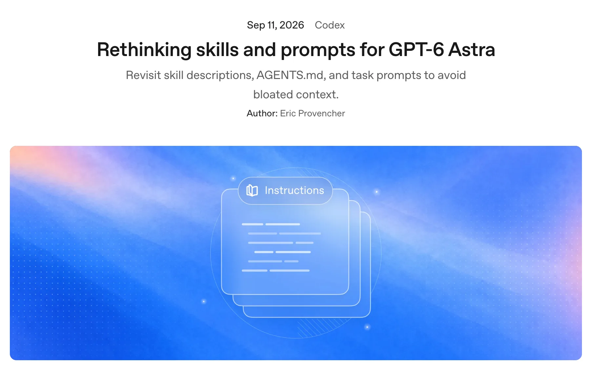
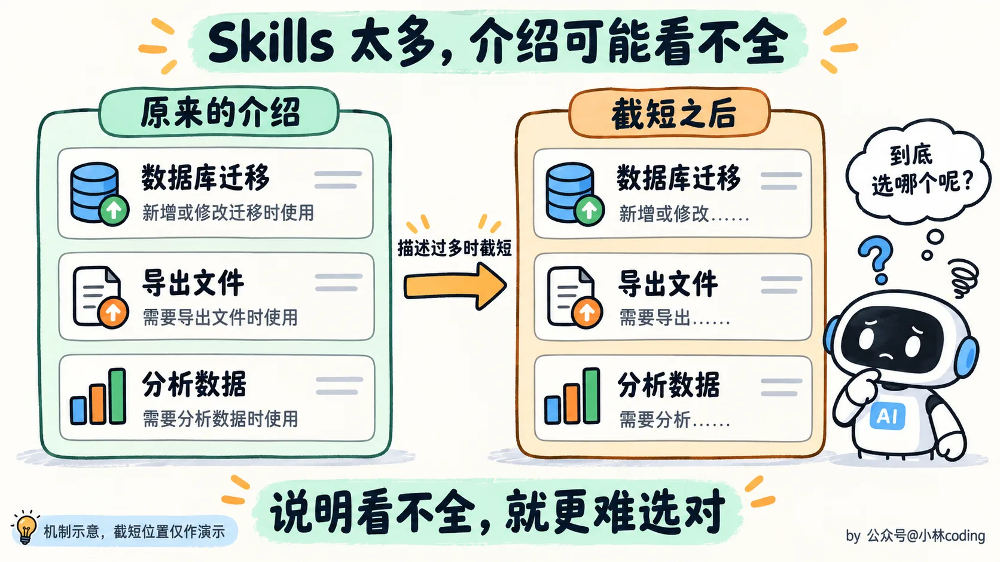
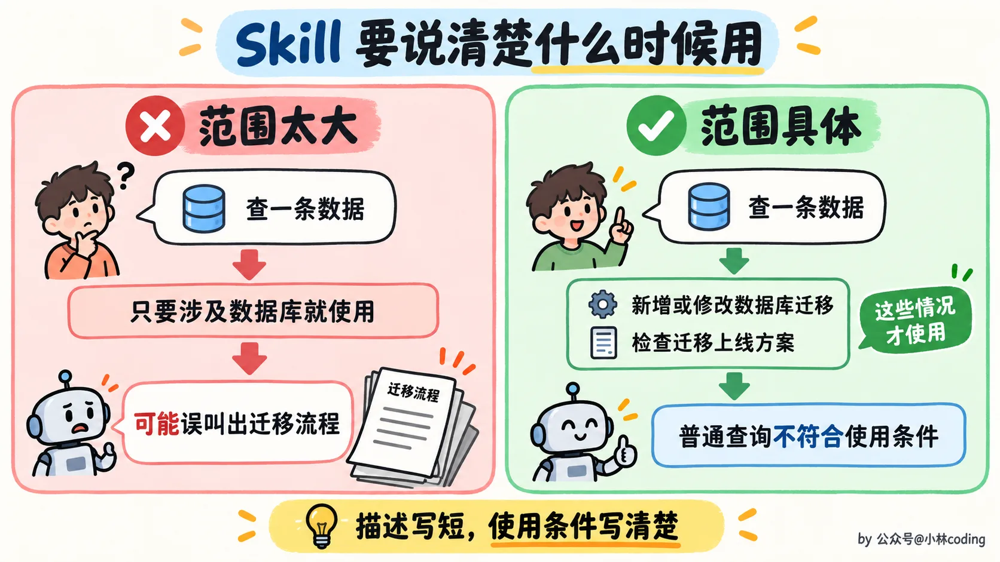
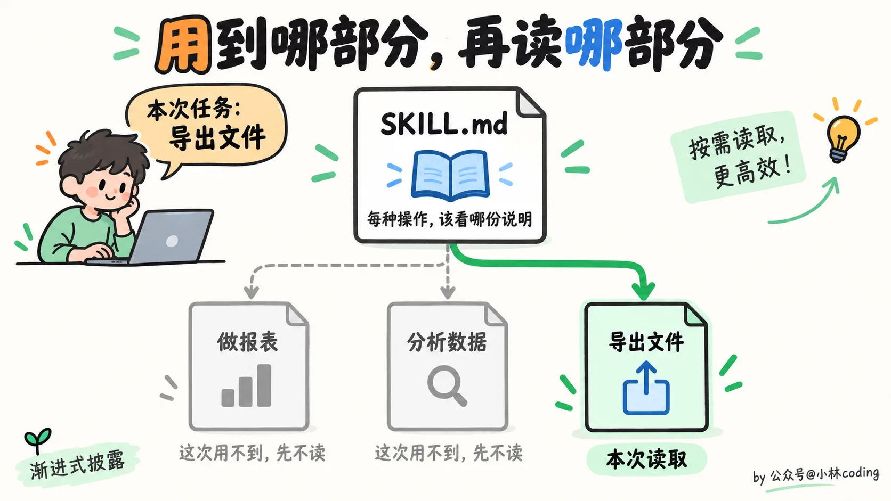
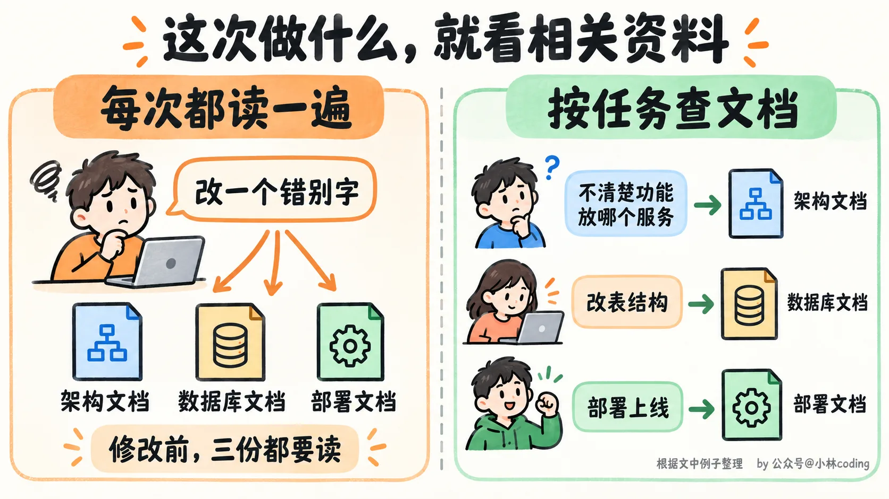
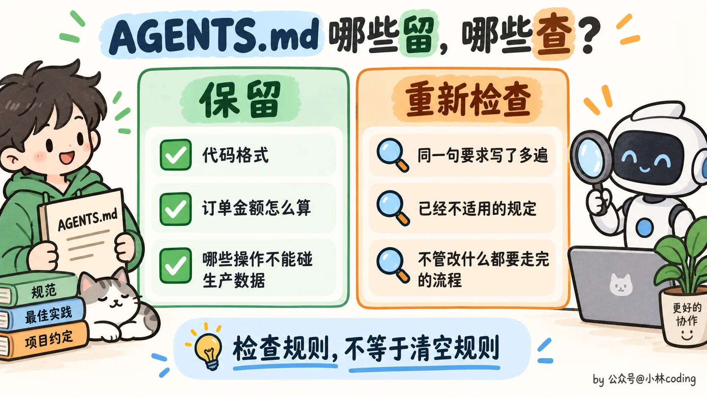
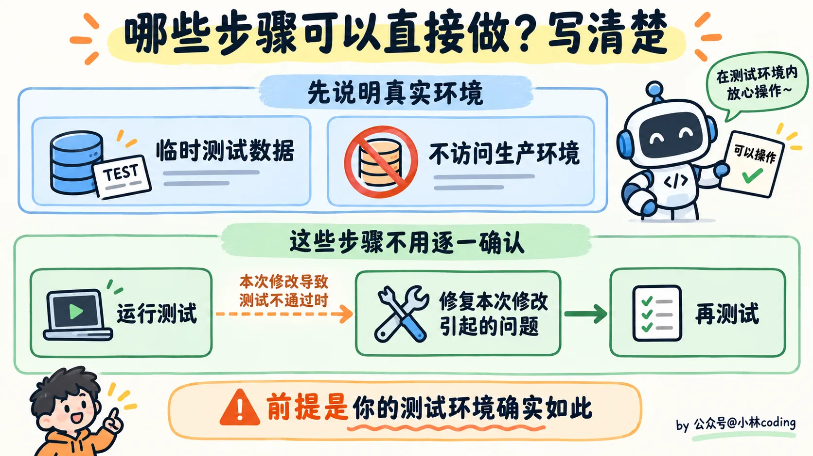
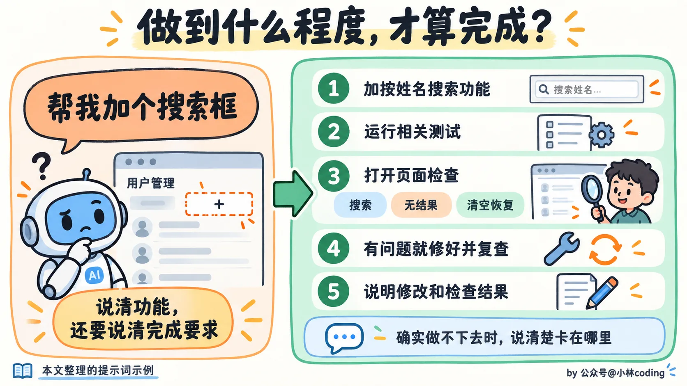
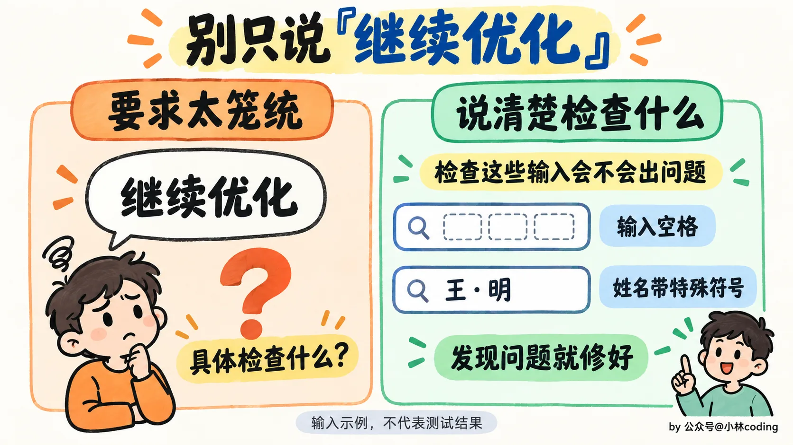

GPT-6 使用指南：怎样让 Codex 更好地完成任务？
大家好，我是小林。
就在前几天，OpenAI 官方博客发了一篇文章，叫《Rethinking skills and prompts for GPT-6 Astra》。专门聊怎么调整提示词、Skills 和 AGENTS.md，才能让 GPT-6 更好地帮我们干活。

里面有个提醒挺有意思，你以前辛辛苦苦给 AI 写的那些规则，现在可能得改改了。
啊？这些规则可都是踩过坑才补上去的，怎么模型升级了，反而还要改？
因为有些事情，旧模型需要你一步步教，GPT-6 已经能自己判断了。
那到底哪些规则该改，具体又怎么改？我把 OpenAI 的建议整理了一下，跟大家聊聊。
01｜Skills 装得越多，AI 就越强吗？
现在不少人看到好用的 Skill，第一反应就是先装上。写代码的、查资料的、做设计的，主打一个我可以不用，但你必须得会。
那装了几十个 Skills，AI 就能自动挑出最合适的那个吗？
AI 怎么知道该用哪个 Skill？它会先看名字和描述，了解这个 Skill 能做什么。OpenAI 提到，如果装的 Skills 太多，描述又很长，Codex 为了把这些介绍放进上下文，就会把描述截短。介绍看不全，AI 自然就更难选对。
好家伙，装了一堆 Skills，结果 AI 连这些 Skills 是干什么的都看不全，还怎么选对？

而且，Skill 的描述也不能写得什么都管。
OpenAI举了一个数据库迁移 Skill 的例子，它本来是帮你给表加字段、改表结构的。
修改前
创建并验证 Postgres 数据库迁移。涉及数据库、查询、数据模型或持久化时使用。
修改后
创建并验证 Postgres 数据库迁移。新增或修改迁移，或检查迁移上线方案时使用。
你看出问题了吗？我只是让 AI 查条数据，它也可能把修改表结构的那套流程翻出来。查个数据而已，有必要搞这么复杂吗？
你看，前半句根本没动，它负责的事情没变。改的是后半句，把「碰到数据库就叫它」缩小成「处理数据库迁移时才叫它」。所以，Skill 的描述尽量写短，同时说清楚什么时候才需要用它。

那 Skill 正文是不是越详细越好？也得看这些内容什么时候需要。
假设一个 Skill 既能做报表，又能分析数据，还能导出文件。你这次只想导出文件，AI 有必要把做报表、分析数据的说明也读一遍吗？没必要吧。
那就把这三种操作的详细说明分开放，再在 SKILL.md 里告诉它去哪看。
修改前
使用这个 Skill 前，先完整阅读报表制作、数据分析和文件导出的全部说明，再开始处理任务。
修改后
根据本次任务，阅读对应的说明。制作报表看 references/
report.md，分析数据看 references/analysis.md，导出文件看 references/export.md。只读取本次任务需要的部分。
这里的文件名是举例，你要换成自己 Skill 里真实存在的文件。这样你只让它导出文件时，它就不用先把另外两份说明也读一遍。
OpenAI把这种做法叫「渐进式披露」。说白了，就是用到哪部分，再读哪部分，别一上来全塞给它。

还有，别什么任务都给 AI 写好几十步，让它严格照着走。OpenAI 提到，模型越来越能理解复杂情况，以前需要你一步步教，现在有些事情已经能自己判断怎么做了。
那哪些步骤该留，哪些可以删？拿做报表来说，你当然要告诉它必须包含哪些数据。但如果规定「做任何报表之前，都必须先读完这五份资料」，就值得想想，这次真的每份都用得上吗？
你要什么结果，得说清楚。至于具体怎么做，有些步骤可以让它自己判断。
02｜你的 AGENTS.md ，该做减法了吗？
聊完 Skills，再看另一个熟悉的文件，AGENTS.md。你可以把它理解成放在项目里的工作说明，告诉 Agent 这个项目有什么约定、该怎么干活。
很多规则怎么来的？模型漏跑一次测试，就加一句「必须测试」；改代码没看清结构，就再补一句「修改前必须阅读架构文档」。慢慢地，文件越来越长，每条背后都有一段血泪史。
可换了模型以后，这些要求还都需要吗？
OpenAI 举的例子很形象，有些项目要求每次修改前，都先读架构、数据库和部署文档。问题是，如果这次只是改一个错别字呢？
错别字还没改，入职培训先走了一遍。
那怎么写更合适？OpenAI也给了修改前后的对照。
修改前
每次修改前，必须先阅读
architecture.md、database.md和deployment.md。
修改后
不清楚各个服务分别负责什么时，查
architecture.md。修改表结构时，查database.md。准备部署上线时，查deployment.md。
同样是这三份文档，改完以后，AI 就知道什么时候需要看哪份了。改个错别字，也不用先把部署流程学一遍。这次做什么，就看相关的资料，没必要每次都从头读一遍。

测试也是一样。以前怕 AI 改完代码不检查，你可能会反复强调「必须跑测试」「改完一定要再检查」。但 OpenAI 提到，GPT-6 Astra 本身就会主动做这些事。如果还留着一堆催它检查的要求，它可能会多跑一些没必要的测试。你只是想让它别漏检查，结果它在检查这件事上花了太多时间。
看到这里，你可能想问，那我把 AGENTS.md 清空，是不是就好了？
也不用直接清空。比如代码要按什么格式写，订单金额要怎么计算，哪些操作不能碰生产数据，这些是你项目里的具体要求，AI 未必知道，当然得留着。
真正值得回头检查的是，同一个要求是不是写了好几遍，有些规定是不是早就不适用了，还有那些不管改什么，都要求 AI 从头走一遍的流程。每条规则都问一句，这次干活真的需要它吗？

对了，如果这个项目是团队一起用的，还得多想一步，其他同事用的是什么模型？OpenAI 提醒，有些模型还需要你把步骤写细一点，同样的步骤给 Astra，又可能管得太死。所以，改大家共用的 Skills 和项目规则时，也看看其他模型还能不能把任务做好。
03｜为什么它总停下来问你？
你有没有碰到过这种情况？任务明明交代清楚了，AI 却干几步就问一句「是否继续」。你坐在电脑前，什么都不用干，光顾着回复「继续」了。
这时除了催它，也值得看看，你是不是曾经写过「执行任何操作前都必须获得确认」？
以前怕 Agent 乱改东西，要求它先问你，这很正常。但 OpenAI 提醒，Astra 可能会把这类要求理解得很严格。你觉得「这种小事直接做就行了」，它却觉得「你明明说了，操作前必须先问」。
那怎么改？把哪些事可以自己做、哪些事必须先问你，分别写清楚。
OpenAI 给了一个本地测试的授权例子。
修改前
运行测试、修改代码或重新验证之前，都必须先获得我的确认。
修改后
本地测试使用临时数据，不会访问生产环境。你可以直接运行测试，修复本次修改导致的问题，并重新运行相关测试，不用每一步都问我。需要部署上线时，先等我确认。
改完以后，它就知道，跑测试、修问题可以接着干，部署上线要先问你。你也不用从头到尾守着回复「继续」了。

当然，前提是你的测试确实不会连接生产环境。如果会，就不能照抄这句话。这里得写真实情况，别为了让 AI 少问两句，连自己用的是什么环境都随便写。
我们自己写规则时，也可以照这个思路来。比如，你希望 AI 在本地改代码、跑测试、修问题时直接继续，那就明确告诉它。部署上线、给别人发消息、删除重要数据这些事，如果需要先经过你同意，也单独写清楚。
别一句「你看着办」就全撒手，也别一句「任何操作都问我」，把自己变成了审批机器人。
04｜怎么让它把事情真正做完？
权限交代清楚了，还有一个问题，它理解的「完成」，跟你理解的一样吗？
OpenAI 提到，如果你习惯了 GPT-5.6 Sol 接到任务就一直往下干，换到 Astra，可能会发现它有时没那么主动。第一版代码刚写好，就回来等你检查了。
这就有点尴尬了。你想要的是一个能用的功能，它把代码写完就交给你。至于能不能跑起来、页面有没有问题，还得你自己接着检查。
那怎么让它多往前做几步？一开始就告诉它，做到什么程度才算完成。
比如你想给后台加个按姓名搜索的功能，它做到哪一步就可以停了？代码写好就行，还是得把页面打开，确认真的能搜出结果？这些最好提前说清楚。
按照原文的建议，我整理了一组提示词对照。
修改前
给用户管理页加一个按姓名搜索的功能。
修改后
给用户管理页加一个按姓名搜索的功能。写完后运行相关测试，并打开页面检查能否正常搜索、搜不到时有没有提示、清空后列表能否恢复。发现问题就修好并复查，最后告诉我修改和检查结果。确实做不下去时，说明卡在哪里。

功能还是同一个功能，但这次你把「做到哪里才算完」交代清楚了。代码写完以后，它还有明确的事情要继续做。代码写完还不算结束，要跑起来、检查过，有问题还得修。
当然，也得看你这次想让它干什么。如果只想讨论方案，就说「先讨论方案，暂时别改代码」。如果想先看设计，就说「设计做完先给我看，确认后再开始写代码」。你需要它停在哪里，也可以提前说清楚。
那如果第一版已经做好了，你还想让它继续检查呢？也别只丢一句「继续优化」。可以说「再检查一下搜索框，输入空格、姓名里带特殊符号时，会不会出问题，有问题就修好」。
这样它才知道接下来要检查什么。不然一句「继续优化」，究竟还要改什么、改到什么时候，你自己可能都没想清楚。

最后
读完这篇文章，我觉得最值得做的一件事，就是回去检查一下自己的那堆老规则。
还得自己一条条看吗？倒也不用。OpenAI 在结尾给了个建议，把这篇官方文章交给 GPT-6 Astra，让它帮你检查现有的规则。我整理了一段提示词，可以直接拿去用。
请阅读这篇 OpenAI 官方文章 https://developers.openai.com/blog/rethinking-skills-and-prompts-for-gpt-6-astra ，根据文中的建议，帮我检查当前项目的
AGENTS.md和相关 Skills。看看有没有重复的要求、互相矛盾的规定，或者已经不适用的内容。哪些 Skill 把使用范围写得太大，容易在不需要的时候被调用？哪些要求可能让你反复问我是否继续，或者事情还没做完就停下来？请指出具体是哪条，解释原因，并给出修改建议。项目里必须遵守的业务要求，以及保护生产环境和重要数据的规定，要保留。先列出建议，等我看过再修改。
所以，换了新模型，也别忘了翻翻以前给它写的那些规则。
尤其是那些「上次踩了坑，所以补一句」的要求，过去有用，现在还需不需要，可以重新看看。
说不定模型已经能自己做好了，你还在旁边反复叮嘱。
你们现在的 AGENTS.md 写了多少行？有没有哪条规则，加的时候很解气，后来却让 AI 干什么都要先问你？评论区聊聊。